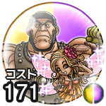

サンディとアギロ
プチおうえん（消費MP：最大MPの25%）戦闘中1回、仲間ひとりの斬撃・体技・じゅもん・ブレスの威力を上げるこころ最大コスト+4スキルの斬撃・体技ダメージ+7%じゅもんダメージ+7%スキルHP回復効果+7%バギ属性ダメージ+7%デイン属性ダメージ+7%
くわしい特徴
【ランク特殊効果】 プチおうえん（消費MP：最大MPの25%）戦闘中1回、仲間ひとりの斬撃・体技・じゅもん・ブレスの威力を上げるこころ最大コスト+4スキルの斬撃・体技ダメージ+7%じゅもんダメージ+7%スキルHP回復効果+7%バギ属性ダメージ+7%デイン属性ダメージ+7%